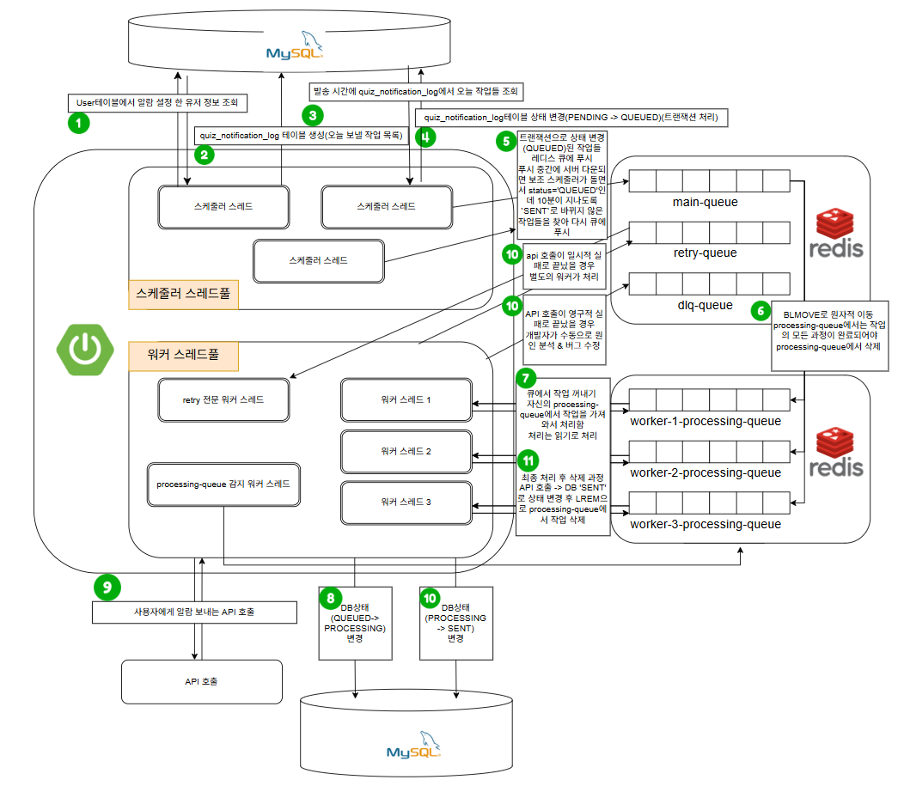

[시스템 설계] 하루 한 번 알림을 “누락 없이” 보내기 위한 Redis 큐 & 워커 설계
1. 시스템 목표
- “하루에 한 번”과 같이 정해진 알림을 누락 없이 전송한다. (At-least-once Delivery)
- API 서버 장애, DB 장애, 애플리케이션 장애 등 어떤 상황에서도 작업 유실을 방지한다.
- 장애 복구 시 발생할 수 있는 중복 발송을 최소화하고, 제어(멱등성)할 수 있도록 설계한다.
2. 아키텍처 설계

[1단계: 생산자 (Scheduler) 영역]
- 별도의 스케줄러 스레드가 알림 발송 시간 10분 전에 User 테이블에서 알람 설정 한 유저 정보를 조회한다.
- 유저 정보를 조회한 스케줄러는 오늘 알림 설정을 on 한 사용자들에 대해서만 quiz_notification_log 테이블을 생성하고 저장한다. (초기 status=’PENDING’)
- 발송 시간이 되면 메인 스케줄러 스레드는 quiz_notification_log 테이블에서 오늘 작업들을 조회한다.
- quiz_notification_log 테이블의 status를 ‘PENDING’에서 ‘QUEUED’로 변경한다.
- 트랜잭션 처리 함으로써 전부 QUEUED로 변경되도록 한다.
- 트랜잭션으로 상태 변경(‘QUEUED’)된 작업들을 레디스 큐(main-queue)에 푸시한다.
- 푸시 중간에 서버가 다운되면 보조 스케줄러가 돌면서 status=’QUEUED’인데 10분이 지나도록 SENT로 바뀌지 않은 작업들을 찾아서 다시 큐에 푸시한다. (작업 유실 방지)
- updated_at/ created_at 기반으로 판단한다.
- 푸시 중간에 서버가 다운되면 보조 스케줄러가 돌면서 status=’QUEUED’인데 10분이 지나도록 SENT로 바뀌지 않은 작업들을 찾아서 다시 큐에 푸시한다. (작업 유실 방지)
[2단계: 소비자 (Worker) 영역]
- main-queue에서 worker-N-processing-queue(워커 전용 백업 큐)로 BLMOVE를 통해 원자적 이동을 실행한다.
- processing-queue에서는 작업의 모든 과정이 완료되어야만 해당 작업을 삭제한다.
- 워커 스레드가 자신의 processing-queue에서 작업을 가져온다.
- processing-queue에서 작업을 가져오는 것은 읽기(LRANGE 등)로 처리한다.
- 삭제는 작업의 모든 과정이 완료된 후 마지막에 수행된다.
- quiz_notification_log 테이블의 status를 ‘QUEUED’에서 ‘PROCESSING’으로 변경한다.
- (의미: 작업이 큐에서 꺼내져 처리가 시작되었음을 보장. API 호출 성공 여부는 보장 X)
- 사용자에게 알람을 보내는 API를 호출한다.
- API 응답 결과에 따라 작업을 분기 처리한다.
- 성공 시: quiz_notification_log 테이블의 status를 ‘PROCESSING’에서 ‘SENT’로 변경한다. (→ 11단계로 이동)
- 일시적 실패 시 (5xx 등): retry-queue로 (원자적 이동을 통해) 옮겨지며, retry 전문 워커 스레드에 의해서 재시도 된다.
- 영구적 실패 시 (4xx 등): dlq-queue로 (원자적 이동을 통해) 옮겨진다. 개발자가 수동으로 원인 분석 및 버그 수정을 해야 한다.
- 최종 처리 후 processing-queue에서 작업을 삭제한다.
- DB status가 ‘SENT’로 상태 변경된 것을 확인한 후, LREM으로 processing-queue에서 해당 작업을 제거한다.
3. 실패 지점
[생산자(Scheduler) 영역]
- DB 조회 실패
- 문제: DB 장애로 유저 목록 조회가 실패한다.
- 결과: 스케줄러가 아예 시작을 못 한다.
- 큐 등록 실패
- 문제: 큐 등록을 하다가 중간에 스케줄러가 다운된다.
[소비자(Worker) 영역]
- 큐 작업 확보 문제
- 문제:
BRPOP을 썼을 때, 워커가 작업을 꺼내고 처리(API 호출)하기 직전에 다운된다. - 해결책:
BLMOVE를 사용해 작업을processing-queue로 안전하게 이동시킨다.
- 문제:
- API 호출 실패
- 문제: 카카오 서버가 에러를 반환하거나 네트워크가 불안정하다.
- 해결책:
retry-queue로 작업을 보내 재시도한다. (최종 실패 시dlq-queue로 격리)
[워커가 API 성공 ‘이후’에 실패하는 영역]
- DB 로그 기록 실패
- 문제: API 호출은 성공했는데 ,
quiz_notification_log테이블에SENT라고UPDATE하려는 순간 DB 장애 발생→ 퀴즈는 발송됐지만, DB엔 기록이 안 됐다.
- 문제: API 호출은 성공했는데 ,
- 작업 완료 처리 실패
- 문제: API 호출도 성공하고, DB 로그 기록도 성공했다. 이제
processing-queue에서 작업을LREM(삭제) 하려던 순간 Redis가 다운된다.
- 문제: API 호출도 성공하고, DB 로그 기록도 성공했다. 이제
큐 등록 실패 문제 해결 방안
1. 사전에 발송 대상을 확정 (log 테이블 생성)
스케줄러가 정해진 발송 시간에 User 테이블을 읽는 것이 아니라, 그 이전에 ‘오늘 보낼 작업 목록’을 quiz_notification_log 테이블에 미리 생성해 둔다.
- 테이블 : quiz_notification_log
- 컬럼: id(PK), user_id(FK), quiz_data, status (PENDING, QUEUED, PROCESSING, SENT, FAILED)
- 시간 : 퀴즈 발송 10분 전
- 동작: 별도의 스케줄러가 User 테이블을 읽어, 오늘 퀴즈를 받아야 할 목록을 quiz_notification_log에 INSERT 한다. (초기 상태 ‘PENDING’)
- 결과: quiz_notification_log 테이블에 오늘 처리해야 할 작업이 status = ‘PENDING’ 상태로 모두 저장된다.
2. 작업 등록 스케줄러
정해진 발송 시간이 되면 메인 스케줄러(Producer)가 동작한다.
이 스케줄러는 User 테이블을 보는 것이 아니라, quiz_notification_log 테이블만 본다.
(만약 사용자가 많으면 한 번에 처리하지 않고, 나눠서 배치로 처리한다)
3. 트랜잭션 관리 & 실패 시 복구
A. DB 트랜잭션
- @Transactional이 시작된다.
-
PENDING인 작업을 찾아서(배치면 배치 개수만큼), 다른 스케줄러가 접근하지 못하도록 DB 락을 건다.- User 테이블이 아닌 quiz_notification_log 테이블 락이여서 락 경합이 발생하지 않는다.
- 락을 건 작업들의 status를
QUEUED로 변경한다. - 트랜잭션이 COMMIT 된다.
- 만약 1~4번 사이에서 서버가 다운되면?
- DB 트랜잭션이 롤백된다.
- status는 다시
PENDING상태로 돌아가고 락도 풀린다. - Redis에는 아무것도 들어가지 않는다.
- 결과: 스케줄러가 재시작되면 이
PENDING작업 1000개를 다시 처리한다.-
@Scheduled(fixedRate = 60000)으로 스레드 풀에 있는 태스크 스케줄러에게 작업을 할당한 후, while 문에서PENDING상태인 작업이 없을 때까지 루프를 돌게 한다. - 예를 들어 서버가 다운되더라도 서버가 재시작한다면 스케줄러가 다시 돌며 실패한 작업들을
PENDING상태가 없을 때까지 작업을 처리한다.
-
B. Redis 등록 ( DB 커밋 이후)
- A번의 DB 트랜잭션이 성공적으로 COMMIT 되었다 (DB는
QUEUED상태) - 이제 for 문을 돌며 Redis에 1000개의 작업을
LPUSH한다.- 만약
LPUSH중간에 서버가 다운되면?
- DB 상태: 1000개 모두
QUEUED이다. - Redis 상태: 600개만 큐에 들어갔다.
- 문제: 400개는
QUEUED상태로 DB에 저장된다(REDIS에는 없음) - 해결책: 보조 스케줄러가 2분마다 돌면서, quiz_notification_log에
status = 'QUEUED'인데 10분이 지나도록SENT로 바뀌지 않은 작업들을 찾는다. - 나머지 400개의 작업을 다시 Redis 큐에 LPUSH 해준다.
- 결과: 작업 유실이 복구된다. (최소 1회 보장)
- 만약
큐 작업 확보 문제
1. 문제 상황
BRPOP(Blocking Right Pop)은 큐에서 데이터를 꺼내오는 순간 그 데이터는 큐에서 영구적으로 삭제된다.
그래서 워커가 Redis에서 작업을 꺼내와도 워커 서버가 다운되면 작업이 유실된다.
2. BLMOVE (원자적 이동 후 데이터 반환)
두 가지 일을 단 하나의 원자적(Atomic) 명령으로 묶어버린다.
- 일 1:
main-queue에서 데이터를 꺼낸다. (Pop)→processing-queue에 데이터를 밀어 넣는다. (Push) - 일 2: 성공한 데이터를, 명령을 요청했던 워커에게 응답으로 즉시 반환한다.
즉 둘 다 성공하거나 둘 다 실패하는 것을 Redis 서버가 보장한다.
동작 순서
- 워커
-
BRPOP대신BLMOVE명령을 실행한다. BLMOVE main-queue worker-1-processing-queue RIGHT LEFT 0
- 설명: RIGHT에서 꺼내서(큐 뒤) LEFT로 넣기(큐 앞)
- 0의 의미:
main-queue에 작업이 들어올 때까지 영원히 대기한다. - worker 스레드마다 개별
processing-queue를 둔다 - 공용으로 두면 갇힌 작업을 누가 어떻게 복구할지 매우 복잡해진다. (A 워커가 특정 작업을 처리중인지 실패했는지 모르기 때문)
-
- Redis
-
task-123을main-queue에서 삭제함과 동시에worker-1-processing-queue에 추가한다.(원자적) - 모든 이동이 완료된 후, 워커에게
task-123을 반환한다.
-
- 워커
-
task-123을 받고 이제 이 작업이worker-1-processing-queue에 안전하게 백업된 것을 안다. - 이제 API 호출을 시작한다.
-
- 워커
- 성공 시
-
API 호출 직전에, DB상태를
QUEUED에서PROCESSING으로 먼저 변경(UPDATE)한다.(만약 이 UPDATE가 실패하면(DB장애, 애플리케이션 서버 다운 등), API 호출은 일어나지 않았고 큐에도 작업이 남아있으므로 재시작시 100% 안전하다.)
이 UPDATE가 성공한 작업에 대해서만 API 호출을 시작한다. - API 호출이 성공하고, DB 로그(
PROCESSING->SENT) 기록도 성공한다. - 모든 처리가 완료되었으므로, 백업 큐에 있던 작업을 수동으로 삭제해야 한다.
LREM worker-1-processing-queue 1 task-123- (의미:
worker-1-processing-queue에서task-123값 1개를 찾아서 삭제)
- 실패 시 - 워커 애플리케이션 다운된 후 재시작한다.
- 로직 1순위로
worker-1-processing-queue를 먼저 확인한다. -
worker-1-processing-queue에 아까 다운될 때 처리 중이던task-123이 그대로 남아있는 것을 발견한다. - 이
task-123작업을 다시 처리(API 호출)하기 시작한다.
주의사항
-
다시 작업을 꺼낼때는 읽기로 꺼내기(삭제는 최종)
만약 워커가 다운된 후
processing-queue에서 작업을 또다시 꺼내어 처리한다면 다시 워커가 다운된다면 데이터가 유실된다.→ 따라서 실패 후 재처리 로직은 삭제가 아닌 읽기이다.
재시작된 워커 동작 원리
- 작업 확인
-
processing-queue에서 작업을 삭제하지 않고 읽기만 한다. - 명령어:
LRANGE worker-1-processing-queue 0 0 - (의미:
worker-1-processing-queue의 첫 번째 작업을 삭제하지 말고, 보여줘)
- 워커가
main-queue에서 작업을 확보할 때 단 1개의 작업만processing-queue로 가져온다.- 워커 하나는 동시에 하나의 작업만 처리한다.
- api 호출 → DB 로그 변경 → 큐에서 데이터 삭제 이 과정이 끝나야
processing-queue에서 작업을 삭제한다.
-
- 작업 재처리
- 워커는
task-123이 큐에 안전하게 남아있는 상태여서, API 호출을 다시 시도한다.
- 워커는
- 만약 또 실패하면?
- 워커가 API 호출 중에 또 다운되어도, 1번 단계에서 작업을 삭제한 적이 없으므로
task-123은processing-queue에 여전히 안전하게 남아있는다.
- 워커가 API 호출 중에 또 다운되어도, 1번 단계에서 작업을 삭제한 적이 없으므로
- 최종 성공 시
- API 호출과 DB 기록이 모두 성공했을 때, 워커가 그제서야
processing-queue에서 작업 삭제한다. - 명령어:
LREM worker-1-processing-queue 1 task-123
- API 호출과 DB 기록이 모두 성공했을 때, 워커가 그제서야
- 작업 확인
-
워커 영구 장애 시
processing-queue작업 정체현재는
worker-1-processing-queue와 같이 워커별로 개별 큐를 두고 있다. (작업 소유권 명확해짐)문제점: 만약
worker-1이 작업을processing-queue로 가져간 직후, 서버가 다운되어 영원히 복구되지 않으면task-123은worker-1-processing-queue에 영원히 갇히게 된다. 다른 워커는 이 작업을 처리할 수 없다.보완책:
- 일정 시간 이상
processing-queue에 머물러 있는 작업을 감지하는 별도의 모니터링 스케줄러가 필요하다. - 이 스케줄러는 모든
worker-*-processing-queue를 주기적으로 스캔한다. - 만약 특정 작업이 Timeout을 초과했다면, 해당 워커가 영구 장애 상태라고 간주하고
LMOVE를 사용해 해당 작업을 다시main-queue로 원자적으로 이동시킨다. - 타임아웃 초과 시
LMOVE worker-1-processing-queue main-queue LEFT RIGHT로 원자적으로 복구한다. - 이를 통해 다른 건강한 워커가 해당 작업을 이어받아 처리할 수 있다.
- 일정 시간 이상
API 호출 실패 해결 방안
API 호출 실패를 일시적 실패와 영구적 실패로 분리하여, 시스템 전체가 멈추는 것을 막는다.
1. 즉시 재시도 하지 않는 이유
- API 호출이 실패했을 때, 그 자리에서 while 루프문을 돌며 즉시 재시도를 하는 것이다.
- 문제점: 워커 스레드는 계속 실패한 작업에만 묶여있게 되므로 그동안
main-queue에 쌓인 나머지 작업은 처리하지 못한다.
2. retry-queue의 역할 (일시적 실패 처리)
retry-queue는 지금 당장 말고 나중에 다시 시도할 작업들을 모아둔다.
- API 호출이 일시적 실패로 끝났을 때 사용
-
503 Service Unavailable(서버 과부하),Network Timeout(네트워크 불안정)
-
- 동작:
- 워커가
processing-queue의 작업으로 API 호출했으나 에러를 받는다. - 워커가 이 작업을 즉시 재시도 하지 않는다.
- 대신,
processing-queue에서 이 작업을 꺼내어retry-queue에 넣는다. - 워커는 이 실패한 작업을 잊고, 즉시
main-queue로 돌아가 다음 작업을 처리한다.
- 워커가
-
retry-queue의 처리:- 이 큐는 별도의 워커(혹은
main-queue가 비었을 때만 이 큐를 보는 워커)가 처리한다. -
retry-queue에서 작업을 꺼낼 때는 지연을 주어서 꺼낸다.(ex: 5분 뒤에 다시 시도)
- 이 큐는 별도의 워커(혹은
3. dlq-queue의 역할 (영구적 실패 격리)
dlq-queue (Dead Letter Queue)는 재시도를 해도 절대 성공할 수 없는 작업들을 모아두는 큐이다.
- API 호출이 영구적 실패로 끝났을 때 사용
-
400 Bad Request(요청 형식이 잘못됨),401 Unauthorized(API 키가 틀림),404 Not Found(카카오 UUID가 존재하지 않음)
-
- 이건 계속 재시도 해도 똑같이 실패할 것인 작업을 넣는다.
- 동작:
- 워커가
processing-queue의 작업으로 API 호출했으나400에러를 받는다. - 워커는 이 작업이 영구적 실패임을 인지한다.
-
processing-queue에서 이 작업을 꺼내서dlq-queue에 넣는다.(원자적) - 이 큐로 이동된 작업은 처리 “실패로 처리 완료된 작업”으로 간주한다. (워커는
main-queue로 복귀)
- 워커가
-
dlq-queue의 처리:- 이 큐는 자동으로 처리되지 않는다.
- 개발자가 수동으로 이 큐에 쌓인 작업들을 확인하여, 왜 특정 에러가 났는지 원인을 분석하고 버그를 수정한다.
4. 최대 재시도 횟수 관리
retry-queue에 있는 작업이 5분 뒤에 재시도했는데 또 503 에러를 받을 수도 있다.
→ 무한 재시도를 막아야 한다.
최대 재시도 횟수 로직을 통해 retry-queue와 dlq-queue 를 연결한다.
- 최초 작업 페이로드에
retryCount: 0을 포함시킨다. - N번 재시도 실패하면 영구적 실패로 간주하고 DLQ로 이동시킨다.
전체 흐름
- 워커가
main-queue->processing-queue로 작업을 가져온다. - API를 호출한다.
-
(성공):
processing-queue에서 작업 삭제. (완료) -
(영구적 실패 / 4xx):
processing-queue->dlq-queue로 이동. (완료-실패) -
(일시적 실패 / 5xx):
retryCount를 확인.-
count < 3:retryCount를 1 증가시키고processing-queue->retry-queue로 이동. -
count >= 3: “최종 실패”로 간주.processing-queue->dlq-queue로 이동.
-
-
(성공):
주의사항
processing-queue에서 이 작업을 꺼내어 retry-queue에 넣거나, retry-queue → dlq-queue 에 넣을때도 원자적이지 않으면 데이터가 유실 될 수 있다.
→ 해결책: LMOVE 사용
-
main-queue→processing-queue로 가져올 때BLMOVE를 사용한 것처럼, 다른 큐로 보낼 때도 원자적 이동 명령어를 사용해야 한다.
LMOVE (Non-Blocking) vs BLMOVE (Blocking)
-
LMOVE- 소스 큐에서 아이템을 POP하여 목적지 큐로 PUSH한다.
- 만약 소스 큐가 비어있으면: 즉시
nil(없음)을 반환하고 명령이 종료
-
BLMOVE- 소스 큐에서 아이템을 POP하여 목적지 큐로 PUSH한다.
- 만약 소스 큐가 비어있으면: 명령이 즉시 종료되지 않고, 데이터가 들어올 때까지 지정된 시간동안 대기한다.
작업 완료 처리 실패 해결 방안
최소 1회 전송을 보장하는 과정에서 중복 발송을 유발하는 실패 시나리오
→ 큐를 더 추가해서 해결하는 것이 아니라, 워커의 로직을 멱등성 있게 설계하여 해결한다.
- 멱등성: 같은 작업을 여러 번 수행해도, 그 결과는 1번 수행한 것과 같아야 한다.
즉, 워커가 재시작되어 중복 발송을 시도하더라도, 실제 발송이 2번 일어나지 않게 방어하는 것
멱등성 검사를 통한 해결
워커는 작업을 처리할 때, 무조건 API부터 호출하는 것이 아니라 DB의 ‘최종 상태’를 먼저 확인해야 한다.
-
[워커 재시작]
워커 A가 재시작된다. -
[백업 큐 확인]
로직 1순위로worker-A-processing-queue를 확인(LRANGE 0 0)하고, API 호출/DB 기록/큐 삭제가 모두 실패했던task-123을 발견한다. -
[멱등성 검사 (Idempotency Check)]
워커 A는task-123을 보고 API를 바로 호출하지 않는다.
대신,task-123에 포함된logId(예: 9876)를 가지고quiz_notification_logDB를 먼저 조회한다.
SELECT status FROM quiz_notification_log WHERE id = 9876; -
[상태 확인 및 결정] 워커 A가 DB에서 조회한
status를 확인한다.- CASE 1:
status = 'SENT'(6단계 실패: 큐 삭제만 실패한 경우)
- CASE 1:
[방어 로직 실행]
- 워커 A는 API 발송도 성공했고 DB 기록도 성공했음을 알고 Redis 큐에서 삭제만 실패했던 것임을 인지한다.
- **카카오 API 호출을 절대로 하지 않는다. (SKIP)**
- 대신, **실패했던 마지막 단계(큐 삭제)만** 다시 수행한다.
- `LREM worker-A-processing-queue 1 task-123` 명령을 실행하여 백업 큐를 정리한다. - CASE 2: `status = 'PROCESSING'` (5단계 실패: SENT 기록만 실패한 경우)
PROCESSING 상태는 ‘보냈을 수도 있고 안 보냈을 수도 있는’ 애매한 상태라,
최소 1회 보장 원칙 때문에 중복 가능성을 감수하고 재호출한다
[방어 로직 실행]
- 워커 A는 “API 호출은 성공했을 수 있으나, DB SENT 기록은 실패했음”을 인지한다.
- ‘최소 1회 보장’ 원칙에 따라, 이 작업은 완료된 것이 아니므로 재시도한다.
- (중복 발송을 감수하고) API 호출부터 다시 시도한다.
- (API 호출 → DB SENT 변경 → LREM) - CASE 3: `status == 'QUEUED'` (매우 드문 경우: PROCESSING 변경조차 실패한 경우)
[방어 로직 실행]
- 워커 A는 “이 작업은 API 호출 시도조차 못했음”을 인지한다.
- 당연히 API 호출부터 다시 시도한다.
- (DB (`QUEUED` → `PROCESSING` )변경 → API 호출 → DB SENT 변경 → LREM)
주의사항
처음 큐에서 받은 작업이든, 재시작 후 발견한 작업이든, 워커는 항상 API 호출하기 직전에 DB의 status를 확인하는 것이 안전한 멱등성 설계이다.
→ 워커의 처리 로직을 단순하고 통일성 있게 유지할 수 있다.
→ 워커가 작업을 확보한 후 실행하는 로직은 항상 동일해야 한다. (분기 처리를 피함)
결론
워커가 작업 시작 전 DB 상태를 먼저 확인(SELECT)하는 멱등성 검사 로직을 가지고 있으면,
6단계 실패(API 호출과 DB 기록까지 성공)한 작업이 재시도되더라도, 워커가 SENT 상태를 감지하고 API 호출을 건너뛰어 중복 발송을 방지한다.
5단계 실패(API 호출 후 PROCESSING 상태에 멈춤)한 작업은, ‘최소 1회 보장’ 원칙에 따라 중복을 감수하고 재시도하여 메시지 누락을 방지한다.